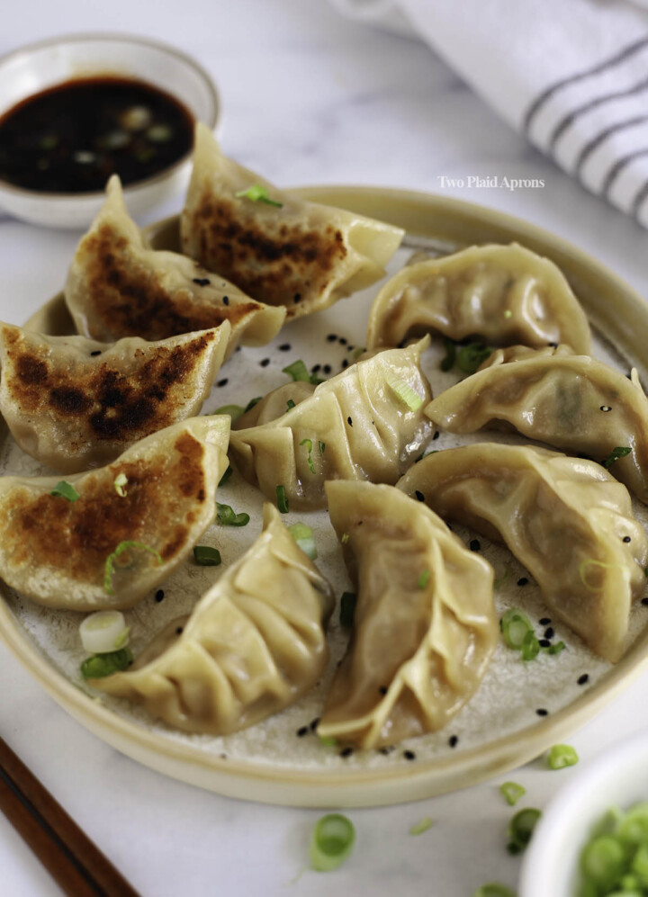

Dumplings

Description
A staple in asian cuisine, dumplings are simple to make, delicious, and filling for all members
of the family after a long day's of work.
Ingredients
- Dumpling wrapper
- Flour
- Ground Pork
- Chives
- Soy Sauce
Steps
- Cut up the chives and mix with the ground pork
- Scoop enough filling of the chive-pork mixture into a wrapper and close it with water and flour
- Boil dumplings in water for 10 minutes in high heat
- Serve with soy sauce